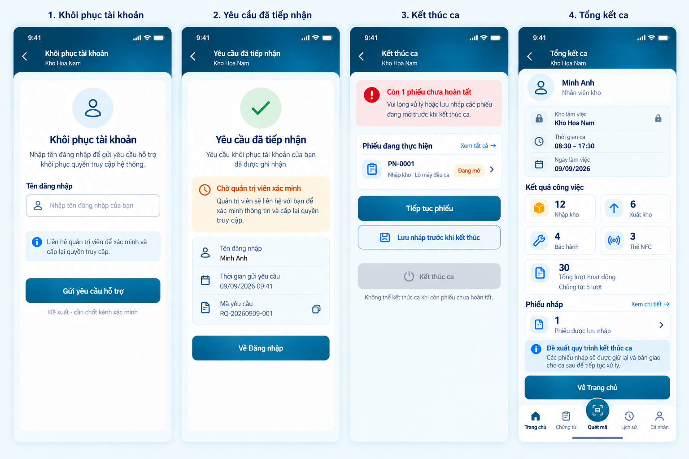
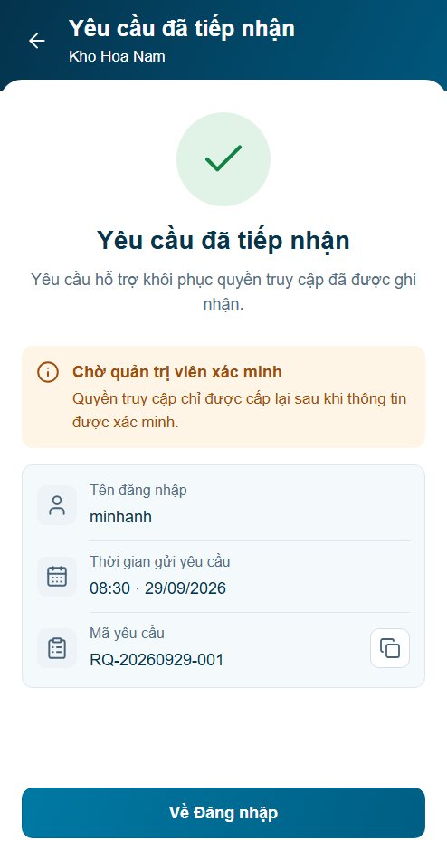
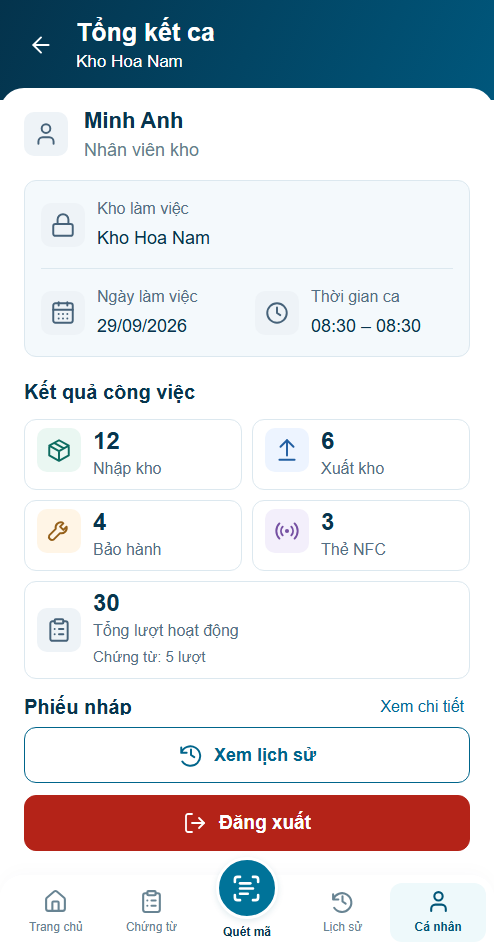

P14.S01 · Khôi phục

Prototype · Hình thức chờ review · Backend chưa tích hợp. Khung494×950 CSS px, footer/icon/dialog theo contract hiện hành. B14 là baseline tham chiếu bố cục, không phải kích thước viewport.
Báo cáo kiểm chứng · Nguồn và số đo
Xem biên nhận trước–sau r02 · Báo cáo r02. S04 cập nhật r05; S03 giữ r04, S01 r03, S02 r02.
Review r03 trước–sau · Báo cáo mới nhất
Review r04 mới nhất · Báo cáo r04
Review r05 mới nhất · Báo cáo r05
Rà soát và sửa lỗi r06 · Báo cáo mới nhất




Khác biệt có nguồn: số phiếu theo P04; identity/thời gian theo phiên; KPI B14 fixture; không tự hứa liên hệ/bàn giao; proposal ở tài liệu ngoài app. Ảnh actual đầu trước chỉnh spacing/dock nằm trong evidence/revision-01/before-polish.